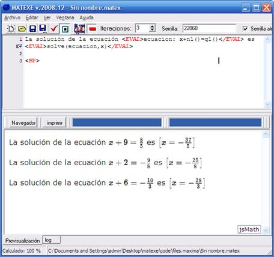
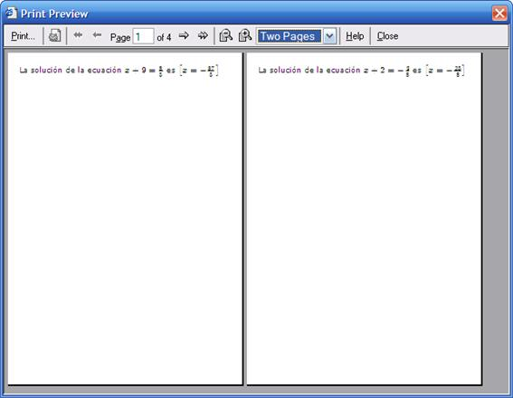

Haciendo uso de las funciones generadoras de números aleatorios predefinidas, se consigue que en cada página aparezcan diferentes expresiones recalculadas en función de los parámetros aleatorios establecidos.

En este ejemplo se han utilizado las funciones n1() y q1() para generar un número natural y otro racional respectivamente, en la ecuación. Además, se ha establecido que se generen 3 páginas en la casilla de iteraciones.
Al generar el documento, aparecen finalmente tres líneas, con el planteamiento de tres ecuaciones diferentes y sus soluciones.
Al pulsar el botón imprimir, tendremos una presentación preliminar del documento, en la que se puede apreciar que cada iteración es mostrada en una página independiente. Esto se consigue gracias a la etiqueta <BP>, que introduce un avance de página.

Para poder visualizar los documentos en otros equipos que no tengan instalados Matexe, se recomienda la generar un pdf con alguna herramienta del tipo pdfCreator (pdfcreator.sourceforge.net/). Esto permite visualizar los documentos aunque no estén instaladas las fuentes JSmath.
Created with the Personal Edition of HelpNDoc: Free EPub and documentation generator